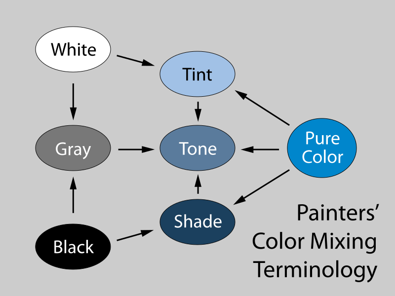
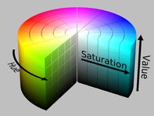
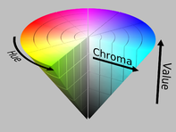
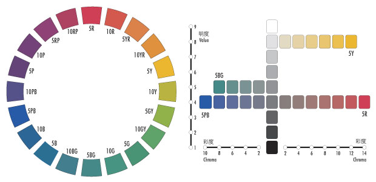
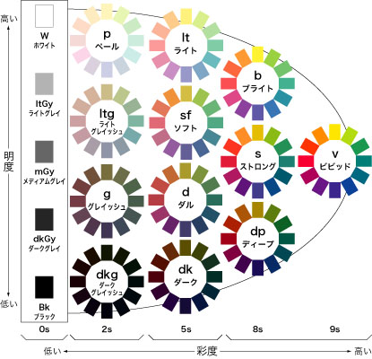
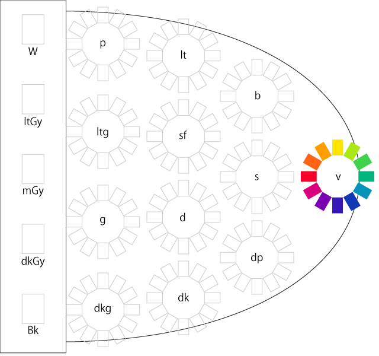
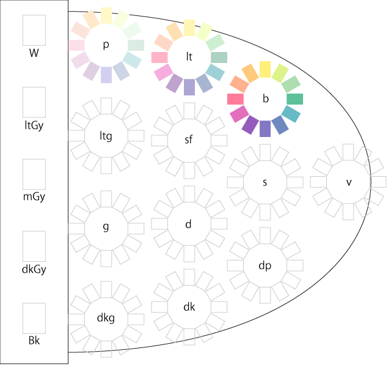
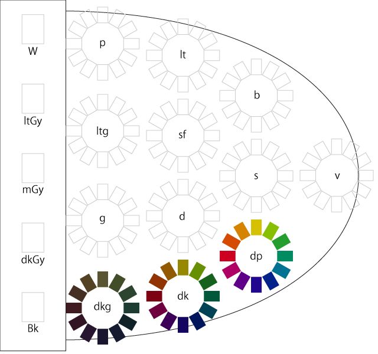
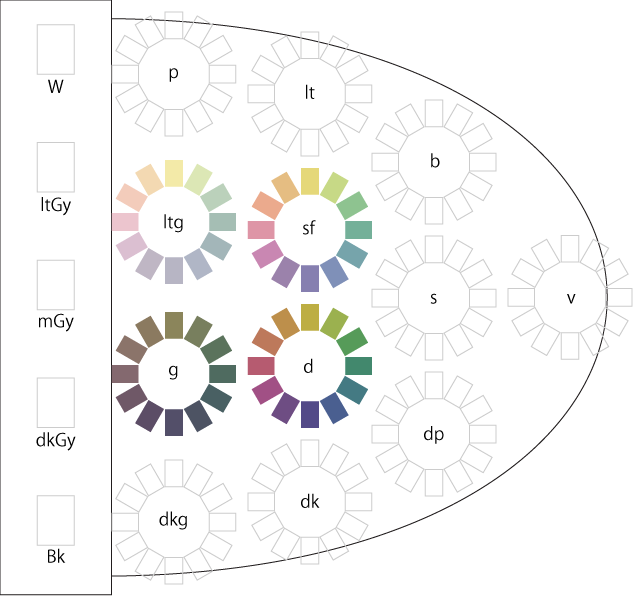

The measure of the lightness or darkness of a color is known as its chromatic value. Adding white to a color creates a tint of that color. Likewise, a shade is produced by adding black to a given color. Adding the complementary color will produce a shade that’s more lifelike and natural.
Reference: Wikipedia, Tints and shades
In color theory, a tint is a mixture of a color with white, which increases lightness, while a shade is a mixture with black, which increases darkness. Both processes affect the resulting color mixture's relative saturation. A tone is produced either by mixing a color with grey, or by both tinting and shading.
Mixing a color with any neutral color (including black, gray, and white) reduces the chroma, or colorfulness, while the hue (the relative mixture of red, green, blue, etc. depending on the colorspace) remains unchanged.

参照: 武蔵野美術大学 > 造形ファイル > 材料・色・サイズ > 色の属性
Reference: HSL and HSV
HSV (for hue, saturation, value) is a cylindrical geometry (Fig. HSV cylinder), with hue, their angular dimension, starting at the red primary at 0°, passing through the green primary at 120° and the blue primary at 240°, and then wrapping back to red at 360°. The central vertical axis comprises the neutral, achromatic, or gray colors ranging, from top to bottom, white at value 1 to black at value 0.


Because the definition of saturation — in which very dark near-neutral colors are considered fully saturated — conflict with the intuitive notion of color purity, often a conic solid is drawn instead (Fig. HSV cone), with what this article calls chroma as its radial dimension (equal to the range of the RGB values), instead of saturation (where the saturation is equal to the chroma over the maximum chroma in that slice of the cone).
Such diagrams often claim to represent HSV directly, with the chroma dimension confusingly labelled "saturation".
参照: 日本色研事業株式会社 > いろのはなし > マンセルシステム
アメリカの画家マンセル（Albert H. Munsell：1858-1918) が創案した表色系で、色相、明度、彩度のそれぞれに、色の差が等間隔に感じられるように色を配列することを目的として創られました。
現在、一般的に「マンセルシステム」として扱われているものは、オリジナルのものではなく、様々な検討・修正を加えられたもので、「修正マンセルシステム」とも呼ばれています。

JIS でも「三属性による色の表示方法」として採用され、物体表面色の表示のための「色のものさし」として、現在でも日本の産業界、色彩関連学会などで広く用いられています。
PCCS（日本色研配色体系：Practical Color Co-ordinate System）は、財団法人日本色彩研究所が、カラーハーモニーの問題をシステマティックに解決することを主な目的として開発し、1964年に発表したカラーシステムです。PCCSは色の三属性を骨組みにしていますが、色相とトーンによる二次元のシステムとして使用できる点に特徴があります。
トーンは、明度 (lightness) と彩度 (saturation) の複合概念といえるものです。色相の同じ系列でも、明・暗、強・弱、濃・淡、浅・深の調子の違いがあります。この色の調子の違いをトーンといいます。このトーンの色空間を設定していることが、PCCSの最大の特徴でもあります。

色相ごとに12種のトーンに分けられ、各色相からトーンの同じ色をまとめています。明度の違いはあるものの、あざやかさ感の共通なグループができます。色相とトーンで色を表す場合、例えば色相番号12（緑）で、ライトトーンの場合「lt12」と略記号で表します。無彩色の場合には、白は「W」、黒は「Bk」、その他は明度を示す数字に「Gy」を付加して「Gy-6.5」と表します。
参照: 色彩101 > 色彩を学ぶ > 色彩トピックス > 純色、清色、濁色
有彩色はそれぞれの色相で純色、清色、濁色があります。
純色 (pure colors) は各色相の中で最も鮮やかな色とされ、PCCSではビビッドトーンになります。

清色には、純色に白だけを加えた明清色 (tint colors) と、純色に黒だけを加えた暗清色 (shade colors) があります。
 |
 |
濁色 (tone colors) は純色に灰色を加えた色 [...] です。優しさや落ち着きを感じる色のグループになります。
